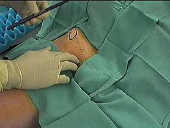

The femoral artery is palpated below the inguinal ligament. The point of needle pucture lies 1.5 cm lateral and distal to the intersection of the artery and the inguinal ligament.
|

The femoral artery is palpated below the inguinal ligament. The point of needle pucture lies 1.5 cm lateral and distal to the intersection of the artery and the inguinal ligament. |